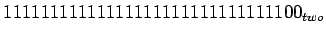
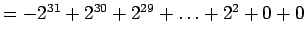
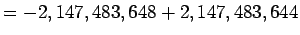
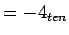

จงแสดงค่าของเลขไบนารีดังต่อไปนี้เป็นเลขฐานสิบ

นำไปแทนค่าในสมการจะได้




การทำการ บวก ลบ คูณ หาร กับ ตัวเลข 2's จะสามารถเกิดการ Overflow ได้เช่นเดียวกับตัวเลขที่ไม่มีเครื่องหมาย (unsigned Number) การเกิด Overflow สามารถตรวจสอบได้จากเครื่องหมายของ Sign bit ผิดไปจากที่ควรจะเป็น เช่น เลข ลบ มี Sign Bit เป็น 0 หรือ เลขบวก มี Sign Bit เป็น 1
การโหลดค่าจากหน่วยความจำมายังรีจีสเตอร์ จำเป็นต้องคำนึงถึงชนิดของเลขว่ามีเครื่องหมาย บวก ลบ หรือไม่อย่างไร การโหลดตัวเลขที่คำนึงถึงเครื่องหมาย จะทำการขยายเครื่องหมาย หรือ Sign Extension เช่น ถ้าเป็นเลขบวกก็ทำการเติม 0 ให้เติมที่ว่างจนถึงข้อมูลที่ทำการโหลดมา ในการโหลดข้อมูลขนาด 32 บิต การจัดการสำหรับ Sign Number กับ Unsigned Number จะเหมือนกัน คอมพิวเตอร์ MIPS มีชุดคำสั่ง สำหรับการโหลดข้อมูลขนาดเล็กกว่าหนึ่ง Word ที่แยกการจัดการระหว่าง Signed และ Unsigned Number ดังนี้
ชุดคำสั่งในคอมพิวเตอร์ MIPS ยังมีคำสั่ง Set on less than ที่แยกกันระหว่างตัวเลขที่มีเครื่องหมายและไม่มีเครื่องหมาย ได้แก่ Set on less than (slt) และ Set on less than immediate (slti) สำหรับ Signed Number และ Set on less than unsigned (sltu) และ Set on less than immediate unsigned (sltiu)